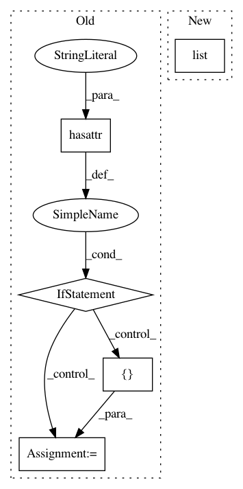

fa4be9850a1258ce4443d49e8b172400074f3427,spynnaker/pyNN/models/neural_projections/delayed_application_edge.py,DelayedApplicationEdge,__init__,#DelayedApplicationEdge#Any#Any#Any#Any#Any#,28
Before Change
super(DelayedApplicationEdge, self).__init__(
pre_vertex, post_vertex, label=label)
if hasattr(synapse_information, "__iter__"):
self.__synapse_information = synapse_information
else:
self.__synapse_information = [synapse_information]
self.__undelayed_edge = undelayed_edge
// Keep the machine edges by pre- and post-slice
self.__machine_edges_by_slices = dict()
After Change
super(DelayedApplicationEdge, self).__init__(
pre_vertex, post_vertex, label=label)
self.__synapse_information = list(synapse_information)
self.__undelayed_edge = undelayed_edge
// Keep the machine edges by pre- and post-slice
self.__machine_edges_by_slices = dict()
In pattern: SUPERPATTERN
Frequency: 3
Non-data size: 5
Instances
Project Name: SpiNNakerManchester/sPyNNaker
Commit Name: fa4be9850a1258ce4443d49e8b172400074f3427
Time: 2020-11-10
Author: christian.brenninkmeijer@manchester.ac.uk
File Name: spynnaker/pyNN/models/neural_projections/delayed_application_edge.py
Class Name: DelayedApplicationEdge
Method Name: __init__
Project Name: SpiNNakerManchester/sPyNNaker
Commit Name: df987582c094c3907ce6e427678b8eb0bf66e7ab
Time: 2020-11-10
Author: christian.brenninkmeijer@manchester.ac.uk
File Name: spynnaker/pyNN/models/neural_projections/projection_application_edge.py
Class Name: ProjectionApplicationEdge
Method Name: __init__
Project Name: brian-team/brian2
Commit Name: c0634a9ffc413c28b43fcc26ea9e99381a28637d
Time: 2015-04-23
Author: marcel.stimberg@inserm.fr
File Name: brian2/core/network.py
Class Name: Network
Method Name: _get_schedule